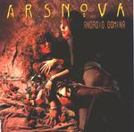

| Artist: | Ars Nova |
| Title: | Android Domina |
| Label: | Musea FGBG 4347.AR |
| Length(s): | 51 minutes |
| Year(s) of release: | 2001 |
| Month of review: | [11/2001] |
| 1) | Android Domina | 10.57 |
| 2) | All Hallow's Eve | 7.56 |
| 3) | Horla Rising | 9.29 |
| 4) | Mother | 7.56 |
| 5) | Succubus | 5.36 |
| 6) | Bizarro Ballo In Maschera | 9.24 |
All Hallow's Eve opens in Christmas style with tinkling bells and soft female choirs. The music that follows sounds a bit industrial and cold, a bit in the style of Brian Hirsch and his projects. The pace goes up a bit and the melody returns to the music which continues to be rather light. This is what we might call typical Japanese progressive: lots of keys, not too flashy yet, but with plenty of classical influences in the composition. The band again manages to weave in a few beautiful melodies, they come out to shine a bit after the middle. The track does seem to consist of a few disjoint passages, a bit like a piece in movements, although they are not explicitly given as such. After a more melodic and folky part, the urgency creeps into the music with high string like descending runs (like running down the stairs as in Vienna of Ultravox). Time for some merry circus music now.
The music of Horla Rising shows the staccato influence of Mastermind, a band who mindset is quite a bit like Ars Nova, except that Mastermind draws more from metal and Ars Nova more from the classical realm. A very powerful piece of music this with the band rocking and bombasting away alread quite early in the track. Great. The middle part is mor3e playful, a bit musical-box-like (no, not in the style of the Genesis track). The following part sounds majestic with sweeping melodies. The final part of the track finds us among some Jarre like music with classical tendencies, leading up to some strong bombast with some picturesque melodic parts as well. The band does succeed very well in delivering both a package of progressive and to not forget to build up some images along the way as well.
Mother is the Musea only bonus track opening with piano and a child singing a bit off-key. Then we go seem to go back into the womb where we hear a strong heart beat and sounds and effects continue to add to the music. In this way the music builds up nicely and turns out to be quite frolic. It is not all happiness though, because after three minutes or so the music becomes quite eerie. Keyboards imitating male and female choirs and fluting keyboards lead up to accordeon like synths and rather
Succubus opens up-tempo in a way that reminds me a lot of the more up-tempo piece of Jarre. It is probably mostly in the sounds of the synths. Of course, instead of continuing this the entire track thourhg, we can be sure that the band incorporates quite a few different passages with fast percussive piano and bombastic keyboards. The band rocks away in classical style at the end.
The final track of this album is dedicated to the memory of Keiko's mother although one would expect the song entitled Mother to be a more likely candidate. I thus wonder whether this is a mistake in the booklet. Anyway, the track is called Bizarro Ballo In Maschera. Again, the string like keyboards are very much in evidence and classical influences abound. On some parts of this track the band fiddles around a bit too much and the classical influences are maybe a bit too much on this one (for me).